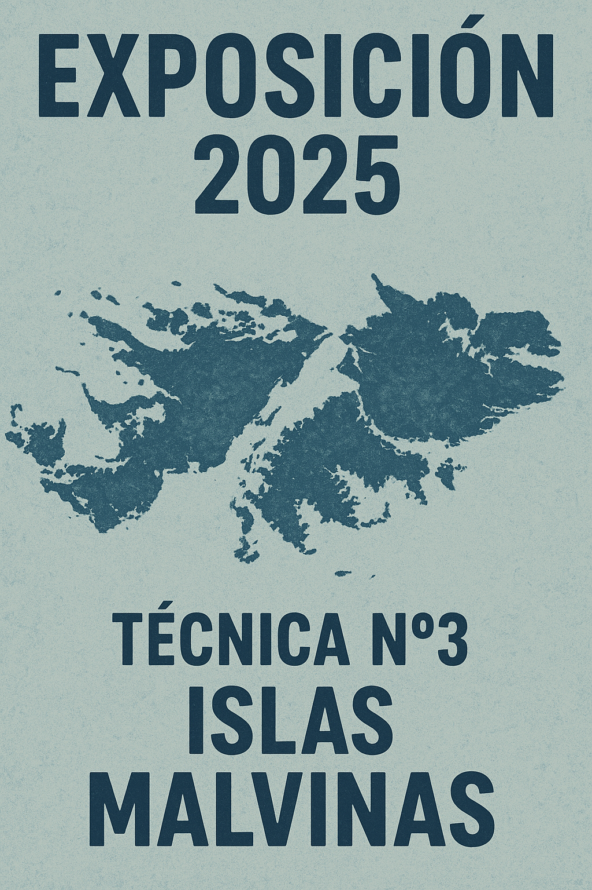
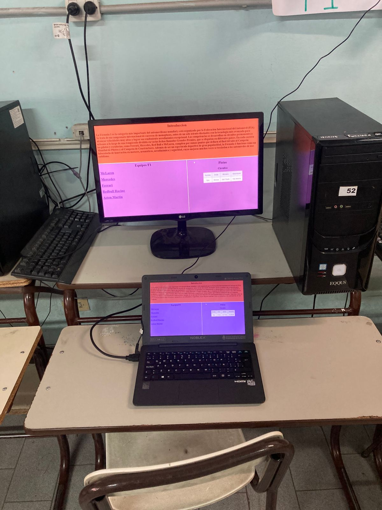
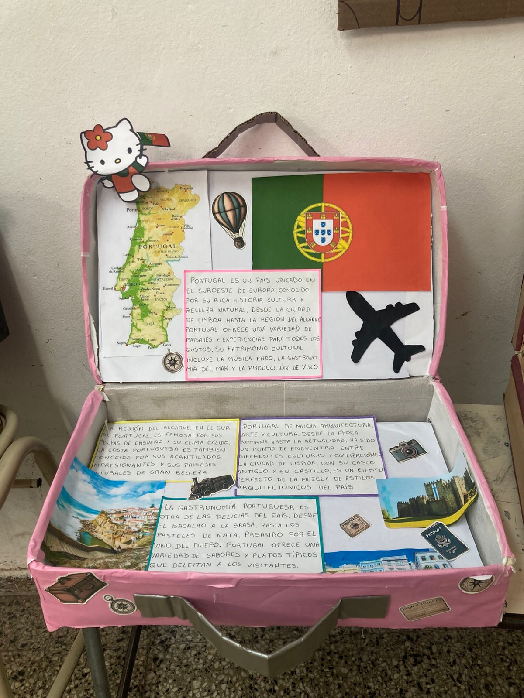
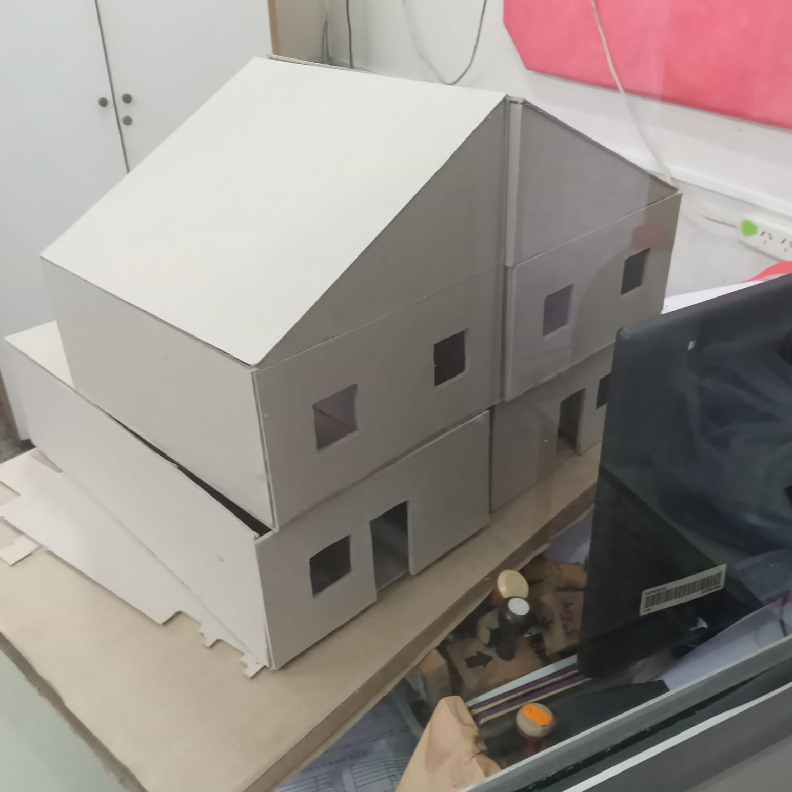

Muestra Anual 2025
La creatividad, el conocimiento y el trabajo de todo un año en una sola jornada inolvidable.

La E.E.S.T Nº3 “Islas Malvinas” realizó su tradicional Muestra Anual 2025, un evento que reunió a estudiantes, docentes y familias para presentar los proyectos desarrollados a lo largo del ciclo lectivo. Tecnología, Turismo y Construcciones se unieron para mostrar lo mejor de cada especialidad.
Programación de Videojuegos
Los alumnos expusieron videojuegos completamente desarrollados por ellos: desde plataformas, shooters, aventuras gráficas hasta juegos educativos. Programados en lenguajes como JavaScript, html, css y c++, demostraron creatividad y dominio técnico.

“Es increíble ver cómo algo que imaginamos en clase se convierte en un juego real que todos pueden probar.”
Armado y Desarmado de PC
Los estudiantes de Informática mostraron su capacidad técnica desmontando y armando computadoras en vivo, explicando cada componente: motherboard, RAM, fuentes, sistemas de refrigeración y mantenimiento preventivo.

Área de Turismo
El departamento de Turismo preparó stands temáticos con información sobre distintos países, sus culturas, gastronomía, lugares históricos y actividades destacadas. También presentaron maquetas representando construcciones famosas del mundo.

Proyectos de Construcciones
Con creatividad y precisión técnica, los alumnos expusieron maquetas de casas, edificios, obras públicas y estructuras arquitectónicas, elaboradas con materiales accesibles pero con un nivel profesional impresionante.

Una muestra que nos llena de orgullo
Cada trabajo presentado fue el resultado del esfuerzo colectivo de los estudiantes y el acompañamiento de los docentes. La muestra 2025 demostró, una vez más, el enorme talento y dedicación que caracteriza a nuestra querida escuela.
La creatividad, la técnica y el trabajo en equipo fueron los grandes protagonistas del día.
⬅ Volver a Noticias